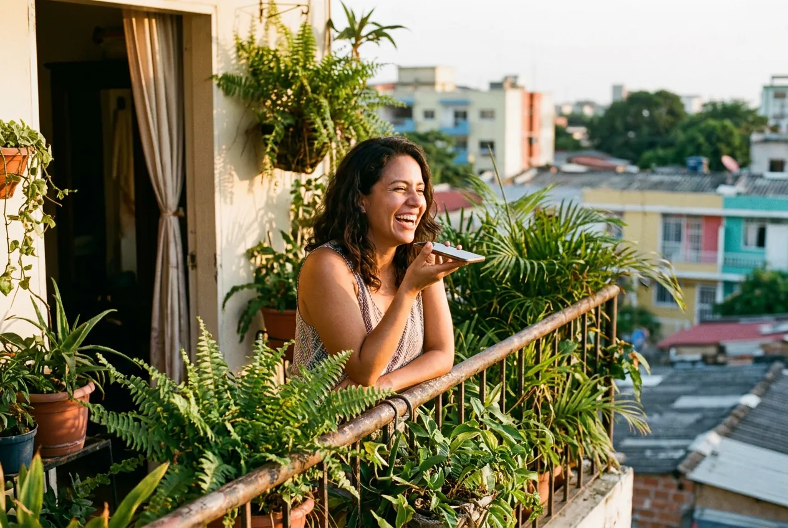
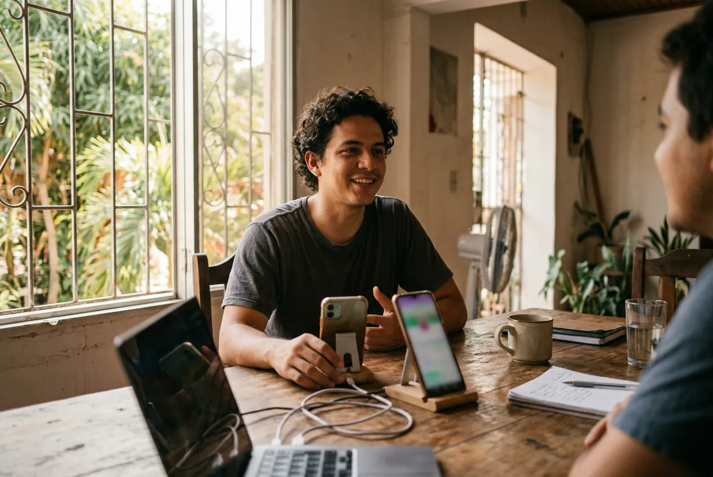
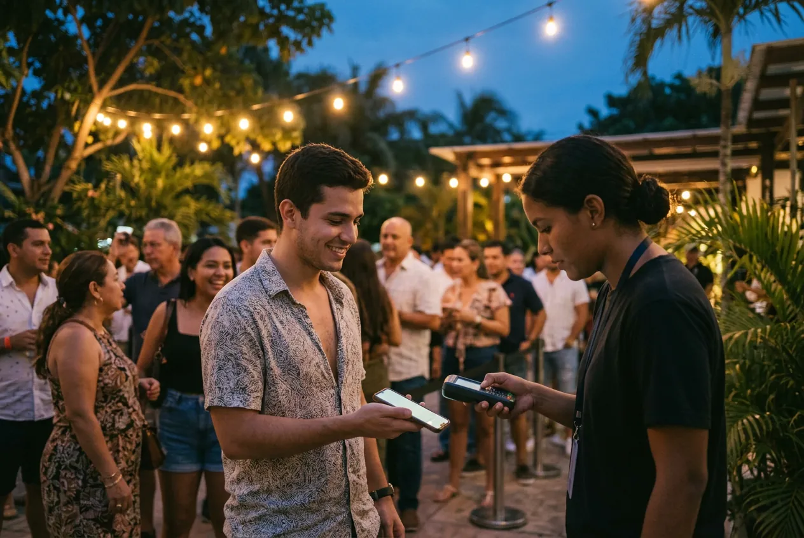
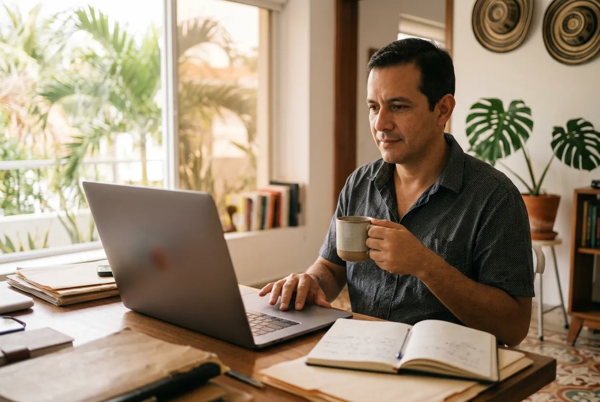
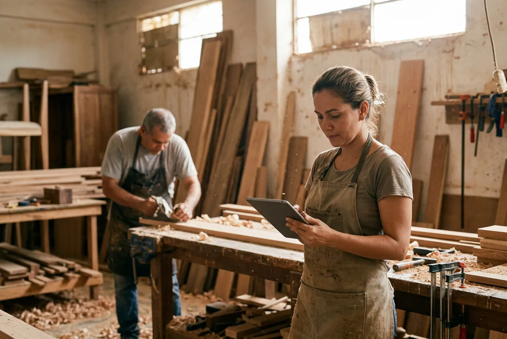
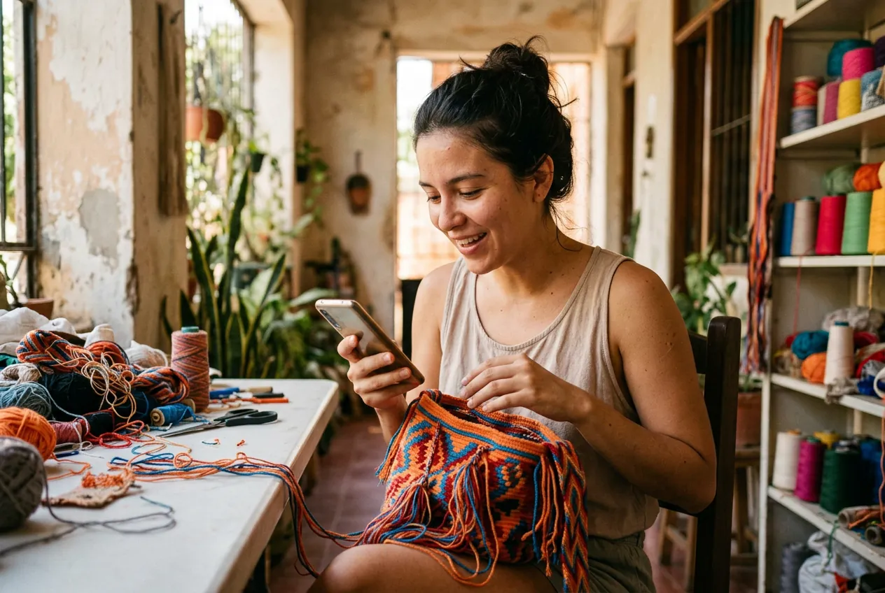
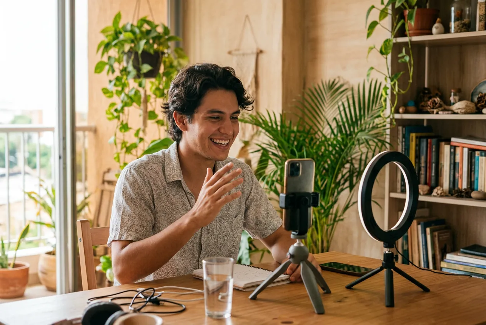
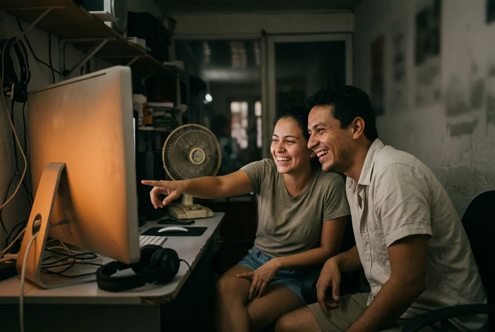
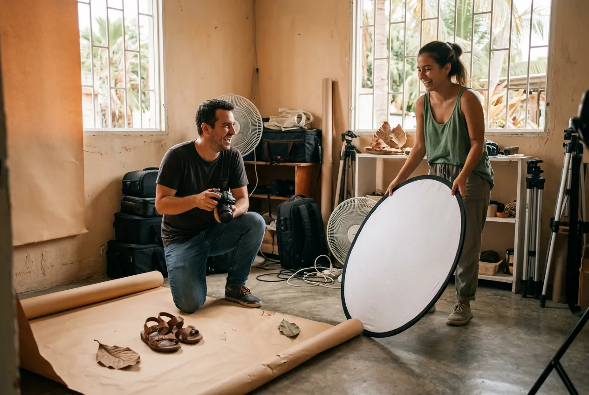
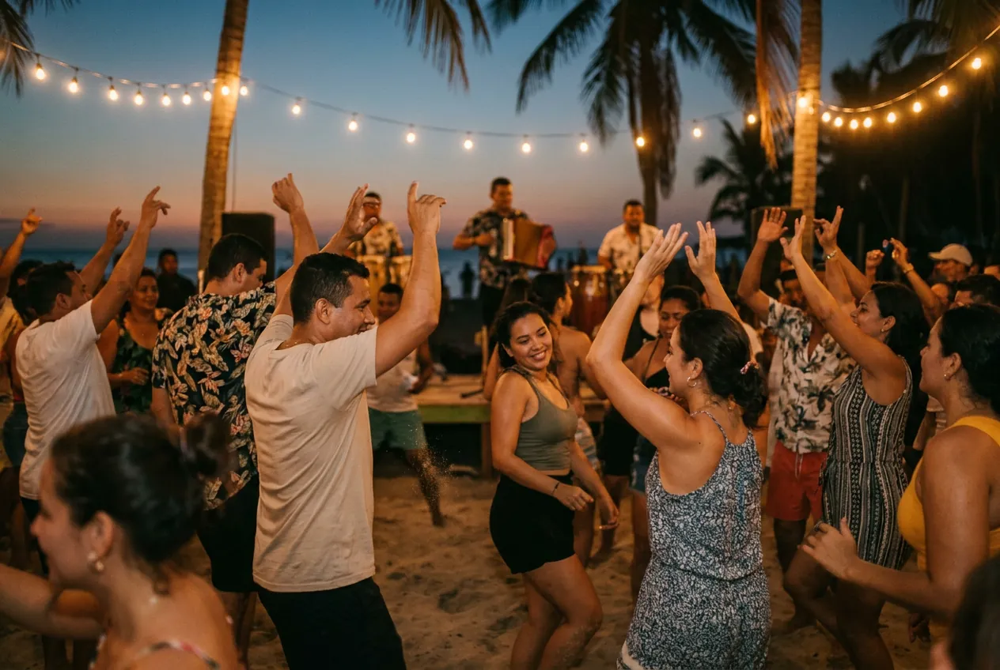

Túnel de servicios
KVRA
Once servicios de tecnología, marketing y eventos. Cada uno es una parada de este viaje.
Fotos de ambiente hechas con inteligencia artificial

01 / 11Tecnología
Apps coninteligencia artificial
Asistentes que te escuchan, buscan el dato en vivo y te responden en voz alta. También actúan en el teléfono: ponen música o abren una app.
- Voz en tiempo real
- Memoria de cada usuario
- Hechas con Gemini y Claude

02 / 11Tecnología
Apps paraiPhone y Android
Una sola app para las dos tiendas, con inicio de sesión con Apple o Google, suscripciones y pagos dentro de la app.
- Diseño fiel a tu Figma
- Suscripciones y compras
- Publicación en las tiendas
03 / 11Tecnología
Páginas weby tiendas en línea
Sitios para marcas, hoteles, inmobiliarias y universidades, y tiendas que cobran en línea o reciben el pedido por WhatsApp.
- Editor para cambiar textos y fotos
- Pagos con Wompi, Bold o Mercado Pago
- Píxel de Meta y Google Analytics

04 / 11Tecnología
Venta de boletasy pagos en línea
Cartelera de eventos, pago en línea y boleta con código QR, con un panel para ver cada venta.
- Pagos con Wompi
- Boletas con código QR
- Panel de ventas

05 / 11Tecnología
Automatizacióny agentes de IA
Agentes de IA que hacen el trabajo repetido de tu negocio, como responder mensajes, ordenar datos o armar reportes. Una persona aprueba antes de que algo salga.
- Agentes con Claude y Gemini
- Conexión con WhatsApp y tus programas
- Aprobación humana antes de enviar

06 / 11Tecnología
Softwarea la medida
Programas hechos para la forma en que trabaja tu empresa: inventario, ventas, contabilidad y pedidos en un mismo lugar.
- ERP y contabilidad
- Conexión con tu punto de venta
- Pruebas automáticas en cada entrega

07 / 11Marketing
Pauta enMeta Ads
Campañas en Instagram y Facebook que llevan a la gente a tu WhatsApp o a tu tienda. Tú apruebas cada anuncio y el presupuesto antes de que salga.
- Campañas a WhatsApp o a tu tienda
- Revisión el día 3 y el día 7
- Informe en pesos y en dólares

08 / 11Marketing
Contenidopara redes
Guiones listos para grabar, reels y carruseles con su calendario del mes. Cada pieza termina con una sola invitación: escribirte.
- Guiones segundo a segundo
- Calendario mensual
- Carruseles e historias

09 / 11Marketing
Edición de videoy video con IA
Reels y anuncios cortados al ritmo de la música, con títulos animados, el cierre con tu logo y música original hecha para cada pieza.
- Edición de reels y anuncios
- Animación de tu logo
- Escenas y música hechas con IA

10 / 11Marketing
Flyers, marcay fotos con IA
Flyers para post e historia, logo e identidad de marca, y fotos de tus productos con modelos, hechas con IA a partir de tus propias fotos.
- Flyers de eventos
- Logo e identidad
- Fotos de producto con modelos

11 / 11Eventos
Producciónde eventos
Fiestas con una historia detrás: el concepto, el guion de la noche, el minuto a minuto, el presupuesto y la venta de boletas.
- Concepto e historia
- Minuto a minuto y guion del presentador
- Presupuesto en pesos y dólares
Fin del viaje · 11 paradas
Hablemos
Cuéntanos qué necesitas y te decimos por cuál parada empezar.
WhatsApp+57 300 674 6770